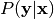

Defines AbstractModel, an abstract class that specifies the interface of pyAnno models.
Bases: traits.has_traits.HasTraits
Abstract class defining the interface of a pyAnno model.
Returns True if the annotations are compatible with the model.
The standard implementation is: valid if the number of annotators is correct, if the classes are between 0 and nclasses-1, and if missing values are marked with pyanno.util.MISSING_VALUE
Factory method returning a model with random initial parameters.
| Parameters: | nclasses (int) – Number of label classes |
|---|
Generate a random annotation set from the model.
Sample a random set of annotations from the probability distribution defined the current model parameters.
| Parameters: | nitems (int) – Number of items to sample |
|---|---|
| Returns: | annotations (ndarray, shape = (n_items, n_annotators)) - annotations[i,j] is the annotation of annotator j for item i |
Infer posterior distribution over label classes.
Compute the posterior distribution over label classes given observed annotations, .
| Returns: | posterior (ndarray, shape = (n_items, n_classes)) - posterior[i,k] is the posterior probability of class k given the annotation observed in item i. |
|---|
Compute the log likelihood of a set of annotations given the model.
Returns log P(annotations | current model parameters).
| Parameters: | annotations (ndarray, shape = (n_items, n_annotators)) – annotations[i,j] is the annotation of annotator j for item i |
|---|---|
| Returns: | log_lhood (float) - log likelihood of annotations |
Computes maximum a posteriori (MAP) estimate of parameters.
Estimate the model parameters from a set of observed annotations using maximum a posteriori estimation.
| Parameters: | annotations (ndarray, shape = (n_items, n_annotators)) – annotations[i,j] is the annotation of annotator j for item i |
|---|
Computes maximum likelihood estimate (MLE) of parameters.
Estimate the model parameters from a set of observed annotations using maximum likelihood estimation.
| Parameters: | annotations (ndarray, shape = (n_items, n_annotators)) – annotations[i,j] is the annotation of annotator j for item i |
|---|
Return samples from posterior over the accuracy parameters.
Draw samples from P(accuracy parameters | data, model parameters). The accuracy parameters control the probability of an annotator reporting the correct label (the exact nature of these parameters varies from model to model).
| Parameters: |
|
|---|---|
| Returns: | samples (ndarray, shape = (n_samples, ??)) - Array of samples from the posterior distribution over parameters. |
Utility functions.
Bases: exceptions.ValueError
ValueError subclass raised by pyAnno functions and methods.
Bases: object
Simple context manager to simplify benchmarking.
Usage:
with benchmark('fast computation'):
do_something()
Transform annotation data in counts format.
At the moment, it is hard coded for 8 annotators, 3 annotators active at any time.
| Parameters: |
|
|---|---|
| Returns: | data (ndarray, shape = (n_classes^3, 9)) - data[i,m] is the number of times the combination of annotators number m voted according to pattern i |
Create a symmetrical band matrix from a list of elements.
| Parameters: |
|
|---|
Compute the log likelihood of theta under Dirichlet(alpha).
| Parameters: |
|
|---|---|
| Returns: | log_likelihood (float) - Log lihelihood of theta given alpha |
Return True if annotation is valid.
An annotation is valid if it is not equal to the missing value, MISSING_VALUE.
Compute the total count of labels in observed annotations.
| Parameters: |
|
|---|---|
| Returns: | count (ndarray, shape = (n_classes, )) - count[k] is the number of elements of class k in annotations |
Compute the total frequency of labels in observed annotations.
| Parameters: |
|
|---|---|
| Returns: | freq (ndarray, shape = (n_classes, )) - freq[k] is the frequency of elements of class k in annotations, i.e. their count over the number of total of observed (non-missing) elements |
Compute an estimate of the real class by majority vote.
In case of ties, return the class with smallest number.
| Parameters: | annotations (ndarray, shape = (n_items, n_annotators)) – annotations[i,j] is the annotation made by annotator j on item i |
|---|
Returns a normalized distribution (sums to 1.0).
If x consists only of zero element, the returned array has elements 1/n , where n is the length of x.
Return an array of samples from a categorical distribution.
| Parameters: |
|
|---|---|
| Returns: | samples (ndarray, shape = (n_samples, )) - Samples from the distribution |
In annotations arrays, this is the value used to indicate missing values
Smallest possible floating point number, somtimes used instead of -np.inf to make numberical calculation return a meaningful value
This module defines functions to sample from a distribution given its log likelihood.
Compute optimum jump for MCMC estimation of credible intervals.
Adjust jump size in Metropolis-Hasting MC to achieve target rejection rate. Jump size is estimated for each parameter separately.
| Parameters: |
|
|---|---|
| Returns: | step (ndarray, shape = (n_parameters, )) - The final optimized step size. |
General-purpose sampling routine for MCMC sampling.
Draw samples from a distribution given its unnormalized log likelihood using the Metropolis-Hasting Monte Carlo algorithm.
It is recommended to optimize the step size, step, using the function optimize_step_size() in order to reduce the autocorrelation between successive samples.
| Parameters: |
|
|---|
Returns one sample from the proposal distribution.
| Parameters: |
|
|---|---|
| Returns: |
|